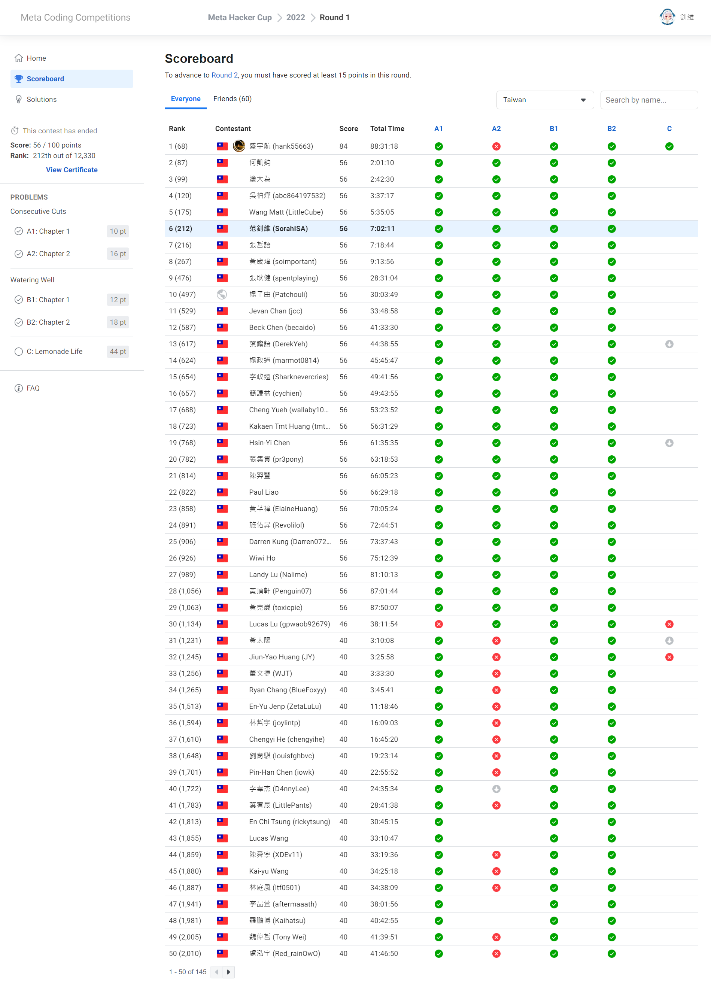

最近要開學了，交大 9/8 才能開始搬進宿舍，然後就撞連假又遇到颱風
QwQ。
因為這天（9/11）剛好要搬行李到學校，七點多就要起床，所以沒辦法好好打完。
前言
前言都寫在前面了耶～
Round 1
- Judge
- Maybe no screencast
A1. Consecutive Cuts - Chapter
1
\(10\)
分 (91:44)
定義一次「切牌」的動作是把撲克牌分成非空的兩堆，再交換順序疊回去。
現在給定 \(N\) 張撲克牌由上而下的數字
\(A_1, A_2, \ldots,
A_N\)，請問你能不能利用恰好 \(K\) 次切牌讓牌堆由上而下變成 \(B_1, B_2, \ldots, B_N\) 的樣子？
- 測資數量\({} = 200\)。
- \(2 \le N \le 500\,000\)。
- \(\sum\limits_{所有測資}{N} \le
5\,000\,000\)。
- \(0 \le K \le 10^9\)。
- \(1 \le A_i, B_i \le N\)（\(1 \le i \le N\)）。
- \(A\) 跟 \(B\) 都是 \(1, 2,
\ldots, N\) 的排列。
AC
Solution
因為只做 A1 不能晉級，所以我直接去看 A2。
A2. Consecutive Cuts - Chapter
2
\(16\)
分 (93:03)
定義一次「切牌」的動作是把撲克牌分成非空的兩堆，再交換順序疊回去。
現在給定 \(N\) 張撲克牌由上而下的數字
\(A_1, A_2, \ldots,
A_N\)，請問你能不能利用恰好 \(K\) 次切牌讓牌堆由上而下變成 \(B_1, B_2, \ldots, B_N\) 的樣子？
- 測資數量\({} = 205\)。
- \(2 \le N \le 500\,000\)。
- \(\sum\limits_{所有測資}{N} \le
7\,000\,000\)。
- \(0 \le K \le 10^9\)。
- \(1 \le A_i, B_i \le
\mathbf{10^9}\)（\(1 \le i \le
N\)）。
- \(\mathbf{A}\) 跟 \(\mathbf{B}\) 是彼此的排列。
AC
Solution
看到的當下就發現是循環字串匹配，也就是
最小表示法
的裸題。
不過在 \(N = 2\) 跟 \(K = 0, 1\) 時好像需要特判，有點噁心
._.。
因為想要自己寫寫看，於是我就手刻了 \(\mathcal{O}(N \lg^2{N})\) 的 suffix
array，大約在 35 分鐘時刻完，特判這幾種 case 又寫了 10 分鐘。
不過很慘的是複雜度太爛了，在 validation input
跑了兩分鐘都還沒有出來，我只好去偷利用 BBQube codebook 的
SA-IS 來算，過了一陣子之後發現我看不懂 SA-IS 所以不會把它改成我要的樣子
QwQ。
最後我決定直接拿 OI-Wiki 上的模板來用，就成功過了！
直到比賽結束我才發現我漏看「\(A\) 跟
\(B\)
是彼此的排列」的限制，讓我多刻了幾行特判。
話說這題好多人吃 FST 喔 OwO。
B1. Watering Well - Chapter
1
\(12\)
分 (102:20)
平面上有 \(N\) 棵樹 \((A_i, B_i)\) 以及 \(Q\) 個水井 \((X_j, Y_j)\)。請找出
\[\sum_{i=1}^{N}\sum_{j=1}^{Q}{(A_i -
X_j)^2 + (B_i - Y_j)^2} \notag\]
的值，並輸出其對 \(10^9+7\)
取模的結果。
- 測資數量\({} = 55\)。
- \(1 \le N, Q \le 500\,000\)。
- \(\sum\limits_{所有測資}{N},
\sum\limits_{所有測資}{Q} \le 3\,000\,000\)。
- \(0 \le A_i, B_i \le 3000\)（\(1 \le i \le N\)）。
- \((A_i, B_i) \ne (A_j,
B_j)\)（\(1 \le i < j \le
N\)）。
- \(0 \le X_i, Y_i \le 3000\)（\(1 \le i \le Q\)）。
- \((X_i, X_i) \ne (X_j,
X_j)\)（\(1 \le i < j \le
Q\)）。
AC
Solution
因為對 B2 暫時沒有想法，於是就先來寫 B1。
上面那個算式的兩個維度是完全互斥的，所以可以紀錄每個 \(x\) 跟 \(y\) 分別有幾棵樹跟幾個水井，再 \(\mathcal{O}(C^2)\) 暴力計算答案。
B2. Watering Well - Chapter
2
\(18\)
分 (135:04)
平面上有 \(N\) 棵樹 \((A_i, B_i)\) 以及 \(Q\) 個水井 \((X_j, Y_j)\)。請找出
\[\sum_{i=1}^{N}\sum_{j=1}^{Q}{(A_i -
X_j)^2 + (B_i - Y_j)^2} \notag\]
的值，並輸出其對 \(10^9+7\)
取模的結果。
- 測資數量\({} = 50\)。
- \(1 \le N, Q \le 500\,000\)。
- \(\sum\limits_{所有測資}{N},
\sum\limits_{所有測資}{Q} \le 3\,000\,000\)。
- \(0 \le A_i, B_i \le
\mathbf{10^9}\)（\(1 \le i \le
N\)）。
- \((A_i, B_i) \ne (A_j,
B_j)\)（\(1 \le i < j \le
N\)）。
- \(0 \le X_i, Y_i \le
\mathbf{10^9}\)（\(1 \le i \le
Q\)）。
- \((X_i, X_i) \ne (X_j,
X_j)\)（\(1 \le i < j \le
Q\)）。
AC
Solution
先去刷了牙、收了一部分的行李，突然意識到他只是維護平方和而已，而印象中這可以透過維護平方和、一次方和、零次方和來做到。
\[\begin{aligned}
\sum_{i=1}^{k}{(p_i + \Delta)^2}
&= \sum_{i=1}^{k}{(p_i^2 + 2 \Delta p_i + \Delta^2)} \\
&= \underbrace{\sum_{i=1}^{k}{p_i^2}}_{平方和} + 2 \Delta \cdot
\underbrace{\sum_{i=1}^{k}{p_i}}_{一次方和} + \Delta^2 \cdot
\underbrace{\sum_{i=1}^{k}{1}}_{零次方和} \\
\end{aligned} \notag\]
範例 code
此處省略掉處理 mod 的部分。 1
2
3
4
5
6
7
8
9
10
11
| int s0 = 1, s1 = 0, s2 = 0, dx;
for (int i = 0; i < Q; ++i) {
while (s0 < N and tree[s0] <= well[i]) {
dx = tree[s0] - tree[s0-1];
s2 += 2 * s1 * dx + s0 * dx * dx;
s1 += s0 * dx;
s0 += 1;
}
dx = well[i] - tree[s0-1];
if (dx >= 0) ans += s2 + 2 * s1 * dx + s0 * dx * dx;
}
|
C. Lemonade Life
\(44\)
分
平面上有 \(N\) 個點 \((X_i, Y_i)\)，你要從點 \(1\) 走到點 \(N\)，並中途停在一些點休息，你只能停在「存在一個半平面，其上只有該點」的點上，並且你一次走的
Euclidean distance 不能超過 \(D\)。
若你在點 \(H_1, H_2, \ldots, H_M\)
停留（其中 \(H_1 = 1\) 且 \(H_M = N\)），那麼你的花費會是
\[\sum_{i=1}^{M-1}{\max\left\{ K, (X_{H_i}
- X_{H_{i+1}})^2 + (Y_{H_i} - Y_{H_{i+1}})^2 \right\}}\]
請求出從點 \(1\) 到點 \(N\) 的最小花費，或判斷其不可能被達成。
- 測資數量\({} = 90\)。
- \(2 \le N \le 1\,000\,000\)。
- \(\sum\limits_{所有測資}{N} \le
4\,000\,000\)。
- 至多只有 \(15\) 筆測資滿足 \(N > 5000\)。
- \(0 \le K, D \le 10^9\)。
- \(0 \le X_i, Y_i \le
1\,000\,000\)（\(1 \le i \le
N\)）。
- \(X_1 < \min\{X_2, X_3, \ldots,
X_N\}\)。
- \(X_N > \max\{X_1, X_2, \ldots,
X_{N-1}\}\)。
- \((X_i, X_i) \ne (X_j,
X_j)\)（\(1 \le i < j \le
N\)）。
幾何題掰掰～
好啦，但是除了看出「存在一個半平面，其上只有該點」就是指凸包以及可以
\(\mathcal{O}(N^2)\)
建圖跑最短路之外就沒想法了。
驅車前往新竹的路上有一大半的時間都在想這個，而且因為大塞車還開了九彎十八拐ㄉ北宜公路，整個超暈
zzz。
隱隱約約感覺會有什麼東西具有單調性，像是你在上路跟下路走的點都只會嚴格遞增（？）、最短路的轉移區間有單調性（爛的）等等，但最後還是什麼都沒有想出來。
總結
- 分數：\(56\)\(/
100\) 分（\(10\)$/ $\(16\)$/ $\(12\)$/ $\(18\)$/ $\(44\)）
- 排名：\(212\)\(/
12\,330\) 名
因為總體排名輸慘，所以就放臺灣排名就好。

結果 C 的官解就是直接建凸包跑最短路，不過他給出了有趣的性質：
在 \(a \times a\)
的格子點上做凸包最多只會包含 \(\mathcal{O}(a^{2/3})\) 的點。
於是直接暴力的複雜度會是好的 OwO。
不過這種題目感覺不適合出在比賽裡，因為他的難度全在證明上，而賽中會想用暴力唬爛的人也不在少數。
以下是檢討：
MHC 的賽制是開放使用網路上的公開程式碼的，所以若要最小化 penalty
其實我應該直接拿 OI-Wiki 上的 code
來用，而不是先嘗試自己刻。這樣的後果就是 A1 ~ B2 都多了約 75 分鐘的
penalty，致使排名下降了 120+ 名。
另外，在這場跟上一場的最後一題都是嚇人的題目，除了複雜度不好分析之外基本上就是暴力小優化就能過的類型。
從 Round 2 開始每場都只有三個小時，我應該多使用 codebook
以及面對無解題去嘗試暴力的做法並加以優化。MHC 的 validation input
都還蠻大的，或許也可以拿來驗證時間複雜度？